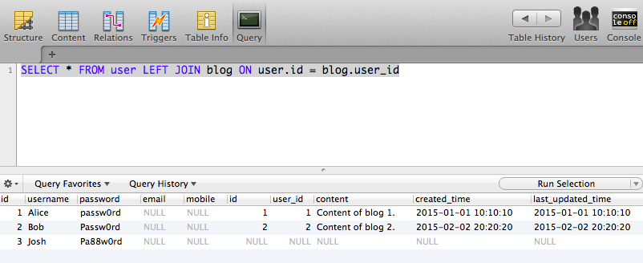

前面的章节介绍了怎么使用 Qt 连接访问数据库 SQLite 和 MySQL，在这一节里将介绍访问数据库的常用操作，主要内容有:
- QSqlDatabase
- 查询
- 使用 Prepared Query 查询
- SQL 注入
- 使用 LIKE 模糊查询
- 解决列名冲突
- 更新
- 删除
- 事务
1. 准备数据库数据
小提示
- 数据库设计，推荐每个表都有一个无意义的主键，如命名为
id。- 尽量不使用外键，数据的逻辑关系使用上面提到的无意义的 id 来关联，这样的好处是数据迁移的时候不需要考虑外键的因素而造成很多麻烦，数据的逻辑关系由应用程序来控制，典型的应用有如很有名的电商开发框架 Hybris。
- 因为没有用外键而不能级连删除，如果担心数据库里会留下一些垃圾数据，可以用定时任务在系统负载比较轻的时候删除它们，例如晚上 3 点。
- 如果时间需要根据不同的时区显示，时间相关的字段最好使用
timestamp而不是datetime，既存储时间的 UTC 毫秒值。
例如开发一个会议管理软件，日期使用 datetime 存储，同时有中国，美国，德国人参加会议，如果大家看到开会时间是 2015-03-03 10:00:00，每个人都会自然的认为是自己当地的时间，那么开会的时候就只有你自己一个人了。使用毫秒的话，显示的时候，根据使用者的时区自动显示为当地时间。在开始讲解之前，先准备好需要用到的数据：
- 创建数据库
qt - 然后在此数据库里创建 3 张表
user,blog,comment - 在每一张表里插入一些数据
创建 user 表
1 | CREATE TABLE `user` ( |
| id | username | password | mobile | |
|---|---|---|---|---|
| 1 | Alice | passw0rd | NULL | NULL |
| 2 | Bob | Passw0rd | NULL | NULL |
| 3 | Josh | Pa88w0rd | NULL | NULL |
创建 blog 表
1 | CREATE TABLE `blog` ( |
| id | user_id | content | created_time | last_updated_time |
|---|---|---|---|---|
| 1 | 1 | Content of blog 1. | 2015-01-01 10:10:10 | 2015-01-01 10:10:10 |
| 2 | 2 | Content of blog 2. | 2015-02-02 20:20:20 | 2015-02-02 20:20:20 |
创建 comment 表
1 | CREATE TABLE `comment` ( |
| id | user_id | blog_id | content | created_time |
|---|---|---|---|---|
| 1 | 1 | 1 | Very useful. | 2015-01-02 11:11:11 |
| 2 | 3 | 2 | Super | 2015-03-03 23:33:33 |
2. QSqlDatabase
访问数据库前必须先和数据库建立连接，Qt 里用 QSqlDatabase 表示一个数据库的连接（有点不习惯，既然表示的是连接，有没有觉得如果叫 QSqlConnection 会更好？可惜 Qt 不是我们设计的！），每个连接都有自己的名字 connectionName，用同一个 connectionName 得取的 QSqlDatabase 对象都是表示同一个连接。有一点需要注意，如果要在多线程里访问数据库，每个线程都要使用不同的数据库连接，即每个线程使用的 QSqlDatabase 的 connectionName 都不一样，否则可能会遇到很多预料不到的事。
创建 QSqlDatabase 对象用静态函数 QSqlDatabase::addDatabase()
1 | QSqlDatabase QSqlDatabase::addDatabase( |
- 第一个参数 type 是指定数据库的驱动，例如
"QSQLITE","QMYSQL","QPSQL" - 第二个参数 connectionName 是连接的名字，可以是任意的字符串
获取 QSqlDatabase 对象用静态函数 QSqlDatabase::database()
1 | QSqlDatabase QSqlDatabase::database( |
- 第一个参数 connectionName 是连接的名字，调用
QSqlDatabase::addDatabase()创建连接时使用的连接名 - 第二个参数 open 为 true，返回连接前打开连接
使用默认的 connectionName 创建和获取连接：
1 | void createDefaultConnection() { |
- 不提供 connectName，Qt 使用默认的 connectName
qt_sql_default_connection - 调用 createDefaultConnection() 创建数据库连接
- 调用 getConnectionByName() 取得数据库连接，多次调用这条语句得到的都是同一个数据库连接
给定 connectionName 创建和获取连接：
1 | void createConnectionByName(const QString &connectionName) { |
- 例如 connectName 为 “MyConnection”
- 调用 createConnectionByName(“MyConnection”) 创建数据库连接
- 调用 getConnectionByName(“MyConnection”) 取得数据库连接，多次调用这条语句得到的都是同一个数据库连接，因为连接的名字都是同一个
重复使用同一个 connectionName 创建数据库连接不会创建多个同名的连接，也不会发生错误，只是会删除已经存在的连接，然后用此 connectionName 重新创建连接。这是很有用的，如程序开始运行的时候数据库连接是好用的，数据库后来崩溃了重启，已有的数据库连接就无效了导致不能访问数据库（不过调用 QDatabase::isOpen() 仍然返回 true），这时还是使用同一个 connectionName 再次创建数据库连接，就可以访问数据库了。
为了防止连接断开导致不能访问数据库，于是每次使用数据库连接的时候就用同样的 connectionName 重新创建一个数据库连接，这种做法是不可取的，虽然保证了程序的正确性，但是效率很低，因为创建数据库连接底层是 Socket 连接，也就是创建连接时也要进行三次握手等操作。
传递 QSqlDatabase 的栈对象而不是指针或者引用会不会占用很多栈空间，会不会由于调用它的复制构造函数而生成另一个 QSqlDatabase 对象导致什么问题？
- 首先
sizeof(QSqlDatabase)输出 8，说明 QSqlDatabase 占用 8 个字节。
打开 QSqlDatabase 的源码也可以看到它只有 2 个指针的成员变量 char *defaultConnection 和 QSqlDatabasePrivate *d，空间不是问题 - 其次，它的复制构造函数创建的新对象和原来的对象共享
char *defaultConnection和QSqlDatabasePrivate *d，使用的是浅拷贝而不是深拷贝，数据也没问题
所以可以放心的在函数之间传递 QSqlDatabase 对象而不用担心出什么问题。
3. QSqlQuery
使用 QSqlQuery 来执行数据库操作，它有两个重要的构造函数，大多数时候也是用这两种形式来构造 QSqlQuery 对象。
1 | // 如果没有或者传入一个无效的 QSqlDatabase 对象，则使用默认的数据库连接 |
QSqlQuery query("SELECT * FROM user")，使用默认的数据库连接执行查询操作QSqlQuery query，则会使用默认的数据库连接创建一个 QSqlQuery 对象，但是不执行任何操作。
1 | // 使用指定的数据库连接创建 QSqlQuery 对象，如果数据库连接无效，则使用默认的数据库连接 |
4. 查询操作
已经有了数据库和相关数据，了解了 QSqlDatabase 和 QSqlQuery，接下来就可以举例使用 QSqlQuery 执行数据库操作，分析可能遇到的问题以及解决办法。为了简单起见，都使用默认的数据库连接，思考一下下面的例子里怎么把默认的数据库连接换成我们自己指定的 connectionName 的连接呢？
4.1. 输出 user 表里所有的 id, username, password
1 | /** |
输出:
“Id: 1, Username: Alice, Password: passw0rd”
“Id: 2, Username: Bob, Password: Passw0rd”
“Id: 3, Username: Josh, Password: Pa88w0rd”
4.2. 输出 username 为 Alice 的 user
1 | 1. 函数定义 |
输出：
“Id: 1, Username: Alice, Password: passw0rd”
输出结果和我们期待的一样。但是思考一下，上面的程序有没有什么问题？
如果我们这么调用函数 outputUser("Alice' OR '1=1")，输出如下：
“Id: 1, Username: Alice, Password: passw0rd”
“Id: 2, Username: Bob, Password: Passw0rd”
“Id: 3, Username: Josh, Password: Pa88w0rd”
是不是有什么不对？outputUser("Alice' OR '1=1") 按我们的想法应该输出 username 等于 Alice' OR '1=1 的记录，即查询结果是空，但却输出了 user 表里的所有记录，完全和期望的不一样，一定是有什么地方出错了，但是看上去都没什么问题呀，怎么都找不到错误吧！
这里我们引入一个概念叫做 SQL 注入攻击：
SQL 注入攻击指的是通过构建特殊的输入作为参数传入，而这些输入大都是 SQL 语法里的一些组合，通过执行 SQL 语句进而执行攻击者所要的操作，其主要原因是程序没有细致地过滤用户输入的数据，致使非法数据侵入系统。
上面的程序在查询一个用户的时候却输出了所有用户的信息，就是一个 SQL 注入攻击的例子，原因是使用的 SQL 语句是用字符串相加拼凑出来的，以至于参数中的特殊字符 ' 没有被转义而拼成了 SELECT * FROM user WHERE username='Alice' OR '1=1'，WHERE 条件里有 OR '1=1'，所以条件永远为真，于是输出了所有的记录，这样做是很危险的，如果因此而泄漏了公司机密信息，老板的小宇宙就要爆发了。
4.3. 怎么避免SQL 注入攻击？
使用 Prepared Query 可以避免SQL 注入攻击。
1 | /** |
调用 outputUserWithPreparedQuery("Alice") 输出：
“Id: 1, Username: Alice, Password: passw0rd”
调用 outputUserWithPreparedQuery("Alice' OR '1=1") 则没有输出，因为 user 表里没有 username 为 Alice' OR '1=1 的记录，太好了，SQL 注入攻击的问题很容易就解决了。
使用 Prepared Query 分为以下 5 步：
- 创建 QSqlQuery 对象：
QSqlQuery query; - 调用
query.prepare(sql);声明要使用Prepared Query的方式来解析 SQL 语句 - 调用
bindValue()函数把占位符替换为传入的参数：query.bindValue(":username", username); - 所有的占位符都替换好后，调用
query.exec();执行 SQL 语句 - 遍历查询结果
占位符的格式为：: 后跟一个单词，如 :username。
思考一下下面几个问题：
SELECT * FROM user WHERE username=:username AND password=:password的占位符是什么呢？- Prepared Query 中 SQL 里的字符串需要用
‘’括起来吗？ - 如果传入的参数是 QDateTime 类型，占位符应该怎么写？
答案：
- 这条 SQL 语句里有 2 个占位符，分别为
:username和:password（不要想成是username AND password=:password） - 不需要。普通 SQL 里字符串需要用
''括起来，但是在这里不需要，Qt 在替换参数的时候会智能的根据参数的类型判断是否需要加上''，如果传入的字符串参数里有'，也会智能的将其转义，所以避免了SQL 注入攻击。 - 写法也是一样的，
:后跟一个单词，可以看看下面的这个例子
1 | /** |
输出：
“Id: 2, Content: Content of blog 2., Created_Time: 2015-02-02 20:20:20”
什么时候使用 Prepared Query 呢？插入时能使用吗？删除时能使用吗？
- 如果传入参数构造 SQL 语句，为了避免
SQL 注入攻击，所以这时需要使用 - SQL 语句比较长时，使用 Prepared Query 的方式构造的 SQL 语句比用字符串相加的方式容易一些，可读性也好很多
- 插入和删除语句都能用
4.4. 使用 LIKE 模糊查询
查询名字里有 o 的所有用户：SELECT * FROM user WHERE username LIKE '%o%'，使用
1 | query.prepare("SELECT * FROM user WHERE username LIKE '%:match%'"); |
查询结果为空，因为 :match 是字符串，替换后 o 的两边会加上 '，所以生存的 SQL 语句为：
1 | SELECT * FROM user WHERE username LIKE '%'o'%' |
这个 SQL 语句是错的，应该像下面这样使用：
1 | query.prepare("SELECT * FROM user WHERE username LIKE :match"); |
也可以使用数据库的字符串连接函数（这个函数是数据库相关的）
1 | query.prepare("SELECT * FROM user WHERE username LIKE CONCAT('%', :match,'%')"); |
MySql
SELECT * FROM user WHERE username like CONCAT(‘%’,:match,’%’)
Oracle
SELECT * FROM user WHERE username like CONCAT(‘%’,:match,’%’) 或
SELECT * FROM user WHERE username like ‘%’||:match||’%’
SQLServer
SELECT * FROM user WHERE username like ‘%’+:match+’%’
DB2
SELECT * FROM user WHERE username like CONCAT(‘%’,:match,’%’) 或
SELECT * FROM user WHERE username like ‘%’||:match||’%’
4.5. 多表查询时字段名冲突
列出所有的 user，如果 user 有 blog，则列出 blog：SELECT * FROM user LEFT JOIN blog ON user.id = blog.user_id。在数据库客户端执行这条 SQL 语句结果如下图：

有 2 个列名都叫 id，第一个 id 是 user 表的 id，第二个 id 是 blog 表的 id。运行下面的程序：
1 | void outputUserAndBlog() { |
输出：
1
2
3
取到的是第一列的 id，即 user 表的 id，并没有输出 blog 表的 id。如果我们想取得 blog 表的 id 应该怎么做呢？显然上面的 SQL 不行，但是我们可以给查询字段重命名：
1 | void outputUserAndBlog() { |
输出：
“User_Id: 1, Blog_ID: 1, Blog_Content: Content of blog 1.”
“User_Id: 2, Blog_ID: 2, Blog_Content: Content of blog 2.”
“User_Id: 3, Blog_ID: 0, Blog_Content: “
通过给查询字段重命名的方式，解决了多表查询时字段名冲突的问题。
5. 插入操作
1 | /** |
调用 insertUser("Qter", "secret") 可以看到数据库里多出了刚才插入的数据。
| id | username | password | mobile | |
|---|---|---|---|---|
| 1 | Alice | passw0rd | NULL | NULL |
| 2 | Bob | Passw0rd | NULL | NULL |
| 3 | Josh | Pa88w0rd | NULL | NULL |
| 4 | Qter | secret | NULL | NULL |
6. 删除操作
1 | /** |
调用 deleteUser("Qter") 则删除了 user 表里 username 为 Qter 的所有记录。
| id | username | password | mobile | |
|---|---|---|---|---|
| 1 | Alice | passw0rd | NULL | NULL |
| 2 | Bob | Passw0rd | NULL | NULL |
| 3 | Josh | Pa88w0rd | NULL | NULL |
想像一个场景，如果使用删除 user 的代码如下
1 | void deleteUser2(const QString &username) { |
调用 deleteUser("Qter' OR '1=1")，结果是什么？大神，你把 user 表清空了，想一下，这种问题叫什么，怎么解决？
7. 事务
事务（Transaction）是并发控制的单位，是用户定义的一个操作序列。这些操作要么都做，要么都不做，是一个不可分割的工作单位。通过事务，能将逻辑相关的一组操作绑定在一起，以便服务器保持数据的完整性。
Qt 里事物相关的函数：
- 是否支持事务：
bool QSqlDriver::hasFeature(DriverFeature feature) const，返回 true 表示支持事务，返回 false 表示不支持事务 - 开启事务：
bool QSqlDatabase::transaction() - 提交事务：
bool QSqlDatabase::commit() - 回滚事务：
bool QSqlDatabase::rollback()
1 | /** |
下面的例子展示了事务的使用：
- 开启事物
- 操作数据库
- 提交事务或者回滚事务
1 | void transactionDemo() { |
调用 transactionDemo() 输出
“Duplicate entry ‘1’ for key ‘PRIMARY’ QMYSQL: Unable to execute query”
“ “
可以看到 query1 执行时发生了主键冲突所以插入时报错，因为数据库里已经有一条记录其 id 为 1，而 query2 执行成功，但是在数据库里却没有看到 query2 插入的用户 Bing，这是因为我们使用了事务，只有 query1 和 query2 同时都插入成功后才会提交事务，如果其中任意一个插入失败都会导致整个插入操作失败。
把 query1 里的 1 改成 4，再次调用 transactionDemo()，可以看到这次插入成功了。
| id | username | password | mobile | |
|---|---|---|---|---|
| 1 | Alice | passw0rd | NULL | NULL |
| 2 | Bob | Passw0rd | NULL | NULL |
| 3 | Josh | Pa88w0rd | NULL | NULL |
| 4 | Biao | xxxx | NULL | NULL |
| 5 | Bing | xxxx | NULL | NULL |
思考一下，我们要向 user 表里插入 100000 个用户：
- 开启事务每次插入 1000 个
- 不使用事务插入 1 个
哪一个的效率高，相差大吗？
事物是面向数据库连接的，思考一个问题，开启事务，更新数据库，提交|回滚事务不在同一个函数里可以吗？
结束语
这一节我们主要讲了 QSqlDataBase，QSqlQuery 的常用操作，使用 Prepared Query 的方式避免 SQL 注入攻击提高了系统的安全性，以及介绍了事务的使用。
再次提示
尽可能的使用 Prepared Query 的方式来构造 SQL 语句，尤其是其中的部分内容由调用者传入，因为我们不能控制调用者传入的内容，但是我们可以控制自己的代码。